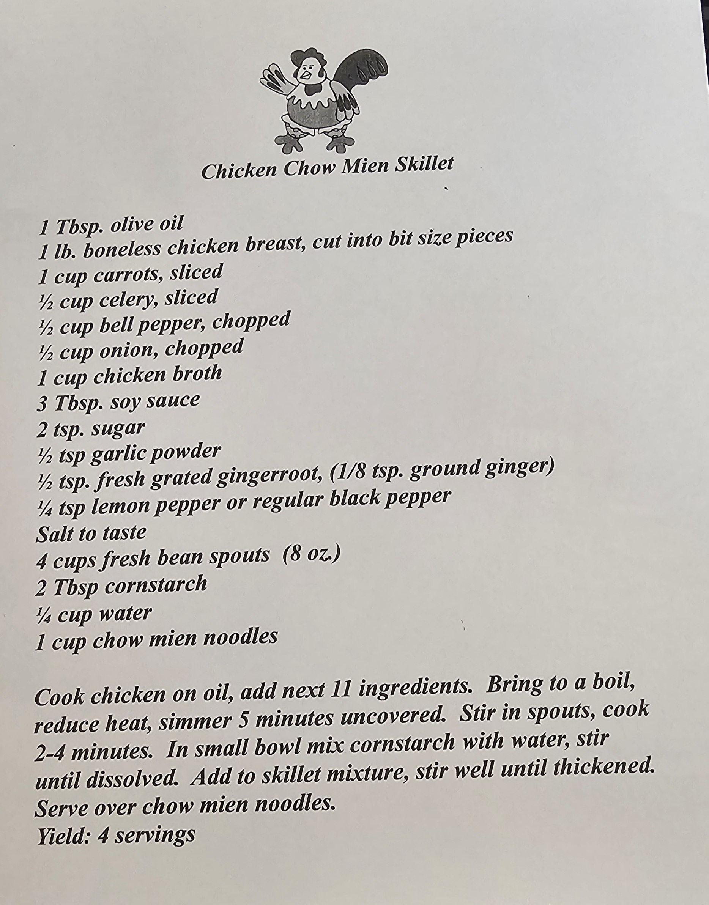

Ingredients:
- 1 tsp olive oil
- 1 lb boneless chicken breast cut into bite sized pieces
- 1 cup carrots sliced
- 1/2 cup celery sliced
- 1/2 cup bell pepper chopped
- 1/2 cup onion chopped
- 1 cup chicken broth
- 3 tbsp soy sauce
- 2 tsp sugar
- 1/2 tsp garlic powder
- 1/2 tsp fresh grated ginger root
- 1/4 tsp lemon pepper
- salt to taste
- 2 tbsp corn starch
- 4 cups fresh bean sprouts
- 1/4 cup water
- 1 cup chow mein noodles
Instructions:
- Cook chicken in oil and then add all ingredients besides the sprouts
- Bring to a boil, then reduce heat and simmer for 5 minutes uncovered
- Stir in sprouts and cook another 2-4 minutes
- In a small bowl mix cornstarch with water and stir until dissolved
- Add to skillet mixture and stir well until thickened. Then serve over chow mein noodles
